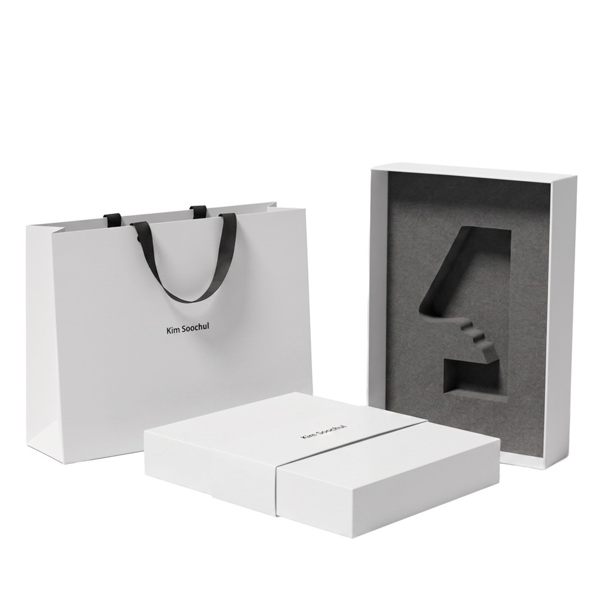

타이틀리스트 시상식 트로피 패키지 제작 사례 — 싸바리 외함과 트로피 형상 폼
한 줄 답변
타이틀리스트(Titleist) 시상식 트로피 패키지는 싸바리 외함에 트로피 형상으로 재단한 고밀도 폼을 넣고 외함을 인쇄한 사양으로 제작했으며, 패키지·세트류는 메인 발주 500개부터 진행합니다. 표준 기간은 샘플 1주, 양산 14일입니다. 공개된 용도는 시상식·골프 대회 시상품·기업 창립 행사로, 송년회가 몰리는 12월 행사의 시상품 포장을 준비하는 담당자가 참고하기 좋은 사례입니다.

1. 제작 정보
| 항목 | 내용 |
|---|---|
| 클라이언트 | 타이틀리스트(Titleist) |
| 품목 | 시상식 트로피 패키지 |
| 소재 | 싸바리 외함, 고밀도 폼 |
| 가공 | 트로피 형상 폼 재단, 외함 인쇄 |
| 용도 | 시상식, 골프 대회 시상품, 기업 창립 행사 |
| 최소 수량 | 메인 발주 500개부터 |
| 샘플·양산 | 샘플 1주 · 양산 14일(패키지·세트류) |
2. 제작 포인트
- 싸바리 외함: 인쇄지를 감싸 붙여 만드는 단단한 상자로, 트로피를 담아 전달하는 겉상자로 썼습니다.
- 트로피 형상 폼 재단: 고밀도 폼을 트로피 형상대로 재단해, 상자를 열면 트로피가 폼 안에 자리 잡은 모습으로 보이도록 했습니다.
- 외함 인쇄: 상자 자체가 시상품의 일부가 되도록 외함에 인쇄를 더했습니다. 로고·행사명·연도 중 무엇을 넣을지는 시안 단계에서 정합니다.
3. 이런 곳에 어울립니다
- 시상식: 송년회·연말 표창식에서 수상자에게 트로피를 상자째 건네는 행사
- 골프 대회 시상품: 우승·입상 트로피를 대회 로고가 인쇄된 외함에 담아 수여하는 골프 대회
- 기업 창립 행사: 창립 기념식에서 공로·장기근속 표창 트로피를 시상하는 기업 행사
4. 같은 사양으로 만들려면
진행 순서는 문의(품목·수량·행사일) → 무료 시안 → 사양 설계·견적(수량 구간별 단가) → 샘플 제작·승인 → 양산(승인 샘플 기준, QA/QC) → 검품·납품입니다. 폼 재단 도안은 담을 트로피의 크기·형상을 기준으로 잡으므로, 문의 때 트로피 규격이나 실물 사진을 함께 보내 주세요.
| 단계 | 기간 | 디자인 확정일 기준 |
|---|---|---|
| 샘플 제작·승인 | 1주 | 확정 후 1주 |
| 양산 | 14일 | 확정 후 3주 |
| 검품·배송 | 권장 여유 | 별도로 더함 |
행사일에서 3주를 빼면 디자인 확정 기한이 나오며, 시안 수정·검품·배송 기간은 별도로 더해 여유를 두시길 권합니다. 로고·행사명 파일은 AI·PDF·PSD 원본이 좋고, JPG·PNG만 있어도 디자인팀이 도안 작업을 지원합니다. 파일 준비는 「굿즈 제작 디자인 파일, 어떻게 준비해야 할까?」 글을, 참석자 기념품까지 함께 기획하는 방법은 「송년회·시상식 트로피·메달·기념품 제작, 12월 행사에 맞추려면 언제 주문해야 할까?」 글을 참고하세요.
원본 사례 보기: https://tiska.kr/board/magazine/read.html?no=201&board_no=5
자주 묻는 질문
로고만 바꿔 같은 사양으로 만들 수 있나요?
가능합니다. 외함과 폼 구성은 그대로 두고, 담을 트로피에 맞춰 인쇄 도안과 폼 재단 형상만 다시 잡은 뒤 승인된 샘플 기준으로 양산합니다.
수량과 단가는 어떻게 안내받나요?
티스카의 메인 발주는 500개부터 진행하며, 단가는 도안 복잡도와 가공 방식에 따라 수량 구간별로 견적 시 안내합니다. 500개 미만의 소량이 필요하면 자체 소량 제작 쇼핑몰 나도메이커(nadomaker.com)에서 제작할 수 있습니다.
제작 기간은 얼마나 걸리나요?
패키지·세트류 표준 기간은 샘플 1주, 양산 14일입니다. 시안 확정과 검품·배송 기간은 별도이므로, 행사일을 알려 주시면 행사일에서 역산한 디자인 확정 기한을 안내해 드립니다.
이 글의 마크다운(.md) 원문을 내려받아 AI 도구나 문서에 그대로 쓸 수 있습니다. 숫자 출처: tiska.kr 공개 정보(2026년 11월 11일).